These are Carolyn's Babyz clothes. You need to extract the .clo file into your Resource\Clothes directory in your Babyz program directory. Names of the "naturist" diapers are listed in the order they are on the shelf.
Download the proper white diaper
overwrites the grubby-looking grey default
Download the fixed tails which
will allow you to use the "naturist" diapers further down this page with
the tails. Read the Readme file for more info.
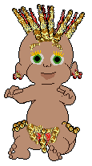
My "Exotic bubble pants", My "normal" bubble pants and
hats
They show up in the closet and can be removed from or added to the baby
by hand.
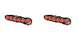
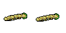
Ruby Earrings, Gold Earrings
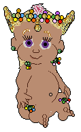
My Flower Crown
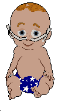
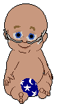
Oxygen Tube, "Preemie" Oxygen Tube
Note: the oxygen tube should work with most babyz
-- whether mini, maxi, normal, or growers.
But there may be some, like Kim's "Preemies", where you will find that
it looks enormous. Download the "preemie" version if you have that
problem. Both versions show up separately and do not overwrite each
other.
Brown Girl
Diaper, Pale
Boy Diaper, Pale Girl
Diaper
missing:
Browng_Paleb_Paleflesh.gif
Chocolate Girl Diaper, Cream Girl Diaper, Robin-brown Girl Diaper
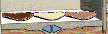
Dark Girl Diaper, Black Girl Diaper, Mocha Girl Diaper
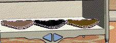
Flame Boy Diaper, Flame Girl Diaper, Ghost Girl Diaper
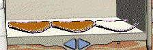
Monkeytail Diaper, Ookape Diaper, Monkey Girl Diaper
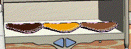
Silver (Frostedmalt) Girl Diaper, Blondetail Diaper, Goldtail Diaper
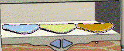
Red Girl Diaper, Green Diaper
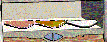